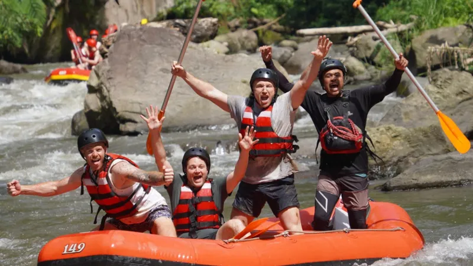

Memilih paket rafting rombongan besar yang tepat memerlukan perhatian pada kapasitas perahu, standar keselamatan, dan kejelasan skema harga agar acara komunitas atau klub berjalan lancar.
- Kapasitas perahu dan rasio pemandu menjadi faktor utama yang perlu dipastikan sebelum memesan paket rombongan besar.
- Skema harga paket rombongan biasanya lebih murah per orang dibanding pemesanan individu, namun perlu dikonfirmasi rinciannya.
- Fasilitas pendukung seperti area parkir, ruang ganti, dan konsumsi penting bagi kenyamanan rombongan besar.
- Booking lebih awal membantu operator mempersiapkan jumlah perahu dan pemandu yang sesuai kebutuhan.
Apa yang Perlu Diperhatikan Saat Memilih Paket Rafting Rombongan Besar?
Hal utama yang perlu diperhatikan adalah kesesuaian kapasitas perahu dengan jumlah peserta, ketersediaan pemandu bersertifikat untuk setiap perahu, dan kejelasan durasi serta rute yang ditawarkan.
Sebelum memesan paket, pastikan operator mampu menyediakan jumlah perahu yang cukup untuk seluruh rombongan tanpa mengorbankan rasio pemandu terhadap peserta. Idealnya, setiap perahu tetap didampingi satu pemandu meskipun jumlah rombongan besar, bukan justru menambah jumlah peserta per perahu demi efisiensi.
Selain itu, tanyakan secara rinci mengenai rute dan durasi yang akan ditempuh, termasuk apakah seluruh rombongan menempuh rute yang sama atau dibagi berdasarkan tingkat pengalaman peserta. Kejelasan ini penting agar tidak terjadi kesalahpahaman di lokasi.
Periksa juga kondisi perlengkapan keselamatan yang disediakan, terutama jika rombongan berjumlah besar sehingga operator memerlukan stok pelampung dan helm dalam jumlah banyak. Pastikan seluruh perlengkapan dalam kondisi layak pakai.
Bagaimana Cara Menegosiasikan Harga Paket Rafting untuk Rombongan?
Cara menegosiasikan harga paket rafting rombongan adalah dengan membandingkan penawaran dari beberapa operator, menanyakan diskon berdasarkan jumlah peserta, dan mengklarifikasi item yang termasuk dalam harga.
Operator umumnya menawarkan skema harga bertingkat, di mana harga per orang menurun seiring bertambahnya jumlah peserta dalam satu rombongan. Menanyakan skema ini secara langsung dapat membantu pengurus komunitas atau klub mendapatkan penawaran terbaik sesuai jumlah anggota yang akan hadir.
Selain harga dasar, pastikan menanyakan item apa saja yang sudah termasuk dalam paket, seperti perlengkapan keselamatan, dokumentasi, konsumsi, dan asuransi. Beberapa operator menawarkan harga murah namun tidak mencakup fasilitas tambahan yang justru dibutuhkan rombongan besar.
Berdasarkan tren umum industri wisata petualangan kelompok di Jawa Timur pada periode 2023-2024, permintaan paket rombongan cenderung meningkat pada akhir pekan dan musim liburan, sehingga negosiasi harga sebaiknya dilakukan jauh-jauh hari sebelum tanggal pelaksanaan untuk mendapatkan penawaran terbaik.
Apa Saja Fasilitas yang Idealnya Tersedia untuk Rombongan Besar?
Fasilitas yang idealnya tersedia untuk rombongan besar meliputi area parkir yang memadai, ruang ganti dan bilas, area tunggu yang nyaman, serta konsumsi setelah aktivitas selesai.
Beberapa fasilitas pendukung yang perlu dipastikan ketersediaannya antara lain:
- Area parkir yang cukup luas untuk menampung kendaraan seluruh rombongan, termasuk bus atau kendaraan roda dua dalam jumlah banyak.
- Ruang ganti dan fasilitas bilas yang memadai agar peserta dapat berganti pakaian dengan nyaman setelah aktivitas.
- Area tunggu bagi peserta yang menunggu giliran, terutama jika rombongan dibagi ke dalam beberapa sesi keberangkatan.
- Layanan konsumsi atau kerja sama dengan warung sekitar lokasi untuk kebutuhan makan setelah rafting.
- Dokumentasi foto atau video yang dapat menjadi kenang-kenangan bagi seluruh rombongan.
Memastikan ketersediaan fasilitas ini sejak awal dapat mengurangi risiko ketidaknyamanan, terutama bagi rombongan komunitas atau klub otomotif yang datang dari lokasi jauh dan memerlukan waktu istirahat sebelum kembali melakukan perjalanan.
Tips Tambahan Saat Memesan Paket Rombongan Besar
Beberapa tips tambahan yang dapat membantu proses pemesanan paket rafting rombongan besar berjalan lebih lancar meliputi:
- Lakukan pemesanan minimal dua hingga tiga minggu sebelum tanggal pelaksanaan, terutama pada musim liburan.
- Tunjuk satu penanggung jawab dari rombongan sebagai kontak utama komunikasi dengan operator.
- Minta konfirmasi tertulis mengenai jumlah perahu, pemandu, dan fasilitas yang disepakati untuk menghindari kesalahpahaman.
- Siapkan rencana cadangan apabila cuaca tidak mendukung pada hari pelaksanaan.
FAQ
Berapa jumlah minimal peserta untuk mendapatkan harga paket rombongan?
Jumlah minimal bervariasi antaroperator, namun umumnya berkisar sepuluh hingga lima belas orang untuk mendapatkan harga khusus rombongan.
Apakah paket rombongan besar sudah termasuk asuransi kecelakaan?
Sebagian operator menyertakan asuransi dalam paket rombongan, namun sebaiknya tetap dikonfirmasi secara langsung sebelum melakukan pemesanan.
Bagaimana jika jumlah peserta berubah menjelang hari pelaksanaan?
Sebagian besar operator memberikan kelonggaran perubahan jumlah peserta hingga batas waktu tertentu, namun perubahan sebaiknya dikonfirmasi sesegera mungkin agar operator dapat menyesuaikan jumlah perahu dan pemandu.
Arya
penulis artikel yang sudah berpengalaman di dalam dunia wisata outbound Batu Malang.